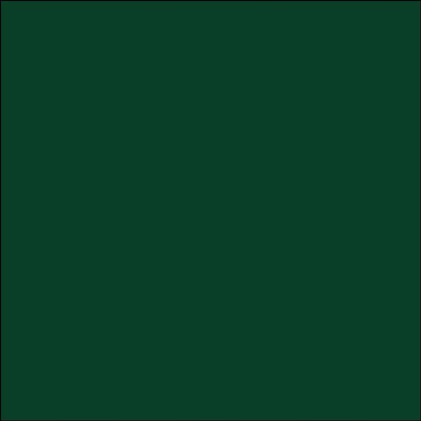

Hij woont in Blerick. daar heeft hij ook op de middelbare school Blariacum gezeten
Hij werkt ook in Blerick als asistent chef.Dat doet die al een half jaar
de favorite kleur van Thijs is groen

Thijs woont samen thuis met zijn moeder katja en zijn Vader John en zijn broer senne
Thijs heeft ook andere broers en een zus hij heeft in totaal 3 oudere broers en een oudere zus.
Thijs heeft ook huisdieren thuis een kat en een hond de hond heet bouke en de kat baer.
Thijs kijkt ook YouTube dan kijkt hij meestal naar Markiplier